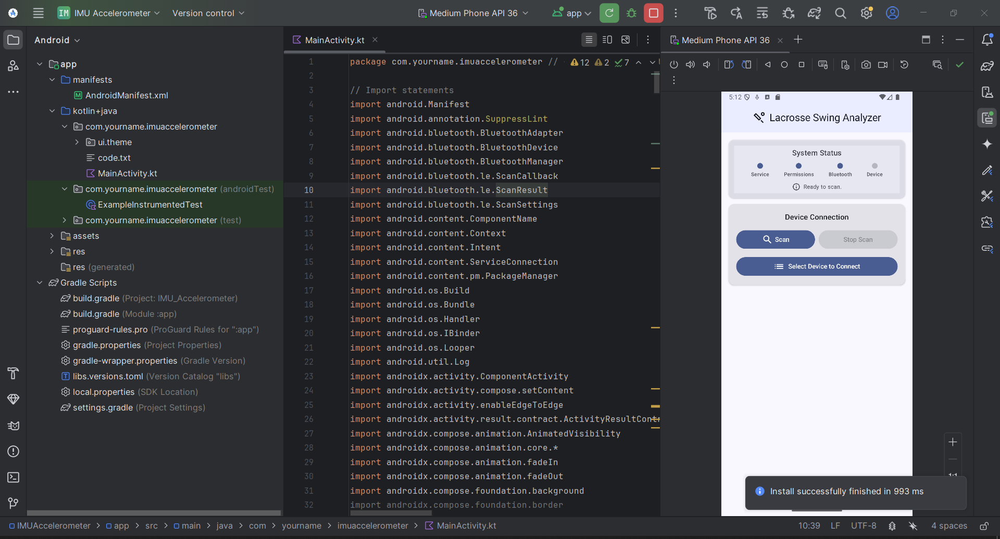

An Android application that pairs with an IMU sensor over Bluetooth Low Energy to capture, classify, and analyse motion patterns using an on-device machine learning model — delivering real-time performance feedback.

This project combines embedded hardware, Bluetooth communication, and mobile machine learning into a single product. An IMU sensor (accelerometer + gyroscope) is mounted on the user. The Android app connects to it via BLE, streams motion data, and runs an on-device ML model to classify the motion pattern in real time.
The application was built for sports performance analysis — specifically swing analysis — giving athletes instant, objective feedback without any cloud dependency.
The IMU firmware runs on a compact BLE-enabled microcontroller, sampling at 100Hz and transmitting data packets to the Android app. The Kotlin-based app uses Android's BLE GATT API for communication, buffers the incoming data into fixed-length windows, and feeds them into a TensorFlow Lite model for classification.
The ML model was trained on labelled motion data and exported to TFLite format for efficient on-device inference — no internet required, no latency from cloud calls.